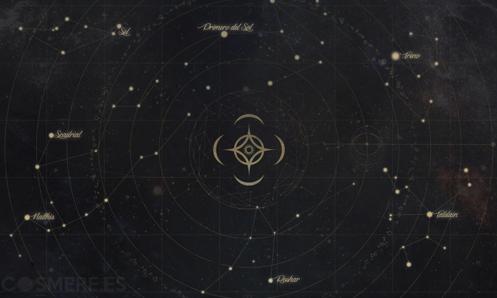

¿QUE ES EL COSMERE?

Como bien vimos antes, el Universo del Cosmere sigue las mismas reglas que el nuestro. Está compuesto por diferentes sistemas solares, conformados por distintos planetas, los cuales podríamos decir que están relacionados con distintas obras o sagas.
A diferencia de cómo se creó nuestro universo mediante el Big Bang, el Cosmere inicia con Adonalsium, un ser, el cual a día de hoy no se sabe si es una fuerza, un dios, o algo similar. Adonalsium fue asesinado y su ser se fragmentó en 16 esquirlas cada una de ellas con sus propias características y destino. Dichas esquirlas fueron repartidas por los distintos sistemas del universo.
- Sistema Scadrial, Esquirlas ( Conservación, Ruina y Armonía
- Sistema Taldain, Esquirlas ( Autonomía )
- Sistema Sel, Esquirlas ( Devoción y Dominio )
- Sistema Drominad, Esquirlas ( ninguna )
- Sistema Roshar, Esquirlas ( Honor, Cultivación y Odium )
- Planeta Yolen, Esquirlas ( desconocida )
- Planeta Vax, Esquirlas ( desconocida)
- Sistema Treno, Esquirla ( Ambición )
- Sistema Nalthis, Esquirla ( Dotación )
Los sistemas y sus respectivas esquirlas actualmente conocidas del Cosmere son los siguientes:

- La Fragmentacion
- Los acontecimientos de la primera era de Mistborn
- Los acontecimientos del Archivo de las tormentas
- Los acontecimientosde la segunda era de Mistborn
- Los acontecimientos de la futura tercera era de Mistborn